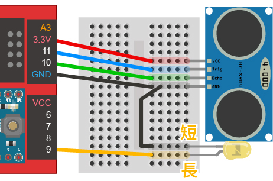
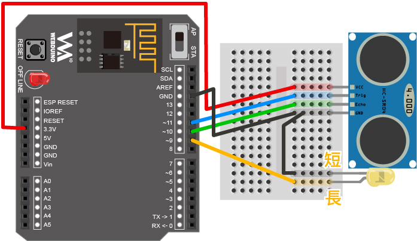
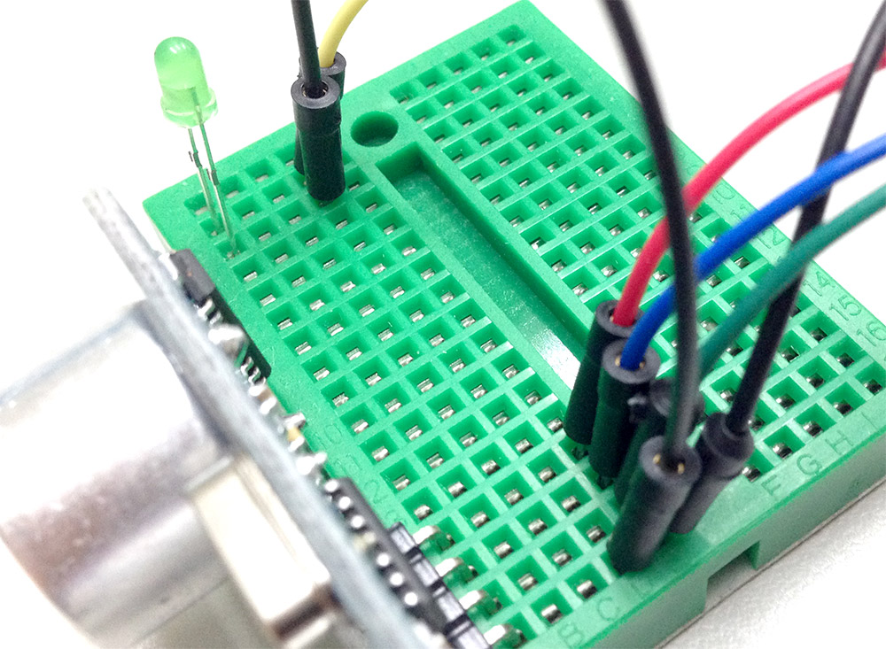
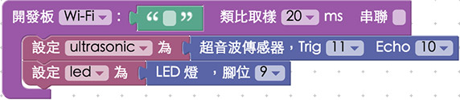
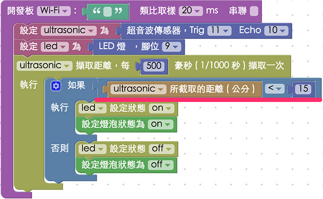

教學範例 7：超音波傳感器控制 LED 燈
對於直接寫 C/C++ 來控制 Arduino 的人來說，用超音波傳感器控制 LED 應該是小菜一碟，但對於要用 Web 技術來實現就沒那麼容易，不過在我們由前面幾個範例了解相關傳感器運作原理之後，就可以很輕鬆的做出來用超音波傳感器控制 LED 燈的實例，也因為是透過 Web 的方式，所以當行為觸發時，網頁端同時也可以收到動作的發生 ( 圖片也會改變 )，相當的方便。
範例影片展示
接線與實作
因為超音波傳感器與 LED 都必須用到 GND 的腳位，所以我們必須要用到麵包板和電線，同樣用電線引出腳位，把超音波傳感器的 VCC 接在 3.3v，Trig 接在 11，Echo 接在 10，GND 就接在 GND 的腳位，然後再用另外的電線將 LED 接在 9 的腳位上。( 因為超音波傳感器在實際的接線會朝外，所以實際的照片電線會有反轉的情形，不要接錯了。 )
馬克一號接線示意圖：

Fly 接線示意圖：

實際接線照片：


Webduino Blockly 操作解析
打開 Webduino Blockly 編輯工具 ( https://blockly.webduino.io )，因為這個範例會用網頁「點擊燈泡」，在 LED 燈亮起時，同時網頁燈泡也會亮起，所以要先點選右上方「網頁互動測試」的按鈕，打開內嵌測試的網頁，用下拉選單選擇「控制圖片」，就會出現一張圖片，我們會將超音波所測得的距離來控制這張圖片。

把開發板放到編輯畫面裡，填入對應的 Webduino 開發板名稱，開發板內放入超音波積木，名稱設定為 ultrasonic，腳位設定為 Trig 11，Echi 10，然後放入 LED 燈的積木，名稱設定 led，腳位設定為 9。

然後我們每 500 毫秒擷取一次距離，利用「邏輯」來判斷，當距離小於 15 公分時，同時點亮 LED 燈以及右側的燈泡圖片，反之距離大於 15 公分時，就熄滅 LED 燈還有右側燈泡圖片。

完成後，確認開發板上線 ( 點選「檢查連線狀態」查詢 )，點選紅色的執行按鈕，用手或是遮蔽物在超音波傳感器前後晃動，就會看到 LED 燈被點亮了。 ( 解答：https://blockly.webduino.io/#-K5LaeMqraW0_friFzcj )
程式碼解析 ( 完整程式碼、檢查連線狀態 )
HTML 的 header 引入 webduino-all.min.js，目的在讓瀏覽器可以支援 WebComponents 以及 Webduino 所有的元件，如果是用 Blockly 編輯工具產生的程式碼，則要額外引入 webduino-blockly.js。
<script src="https://webduino.io/components/webduino-js/dist/webduino-all.min.js"></script>
<script src="https://webduinoio.github.io/webduino-blockly/webduino-blockly.js"></script>
HTML 裡就是兩張一明一暗的燈泡圖片，利用 CSS 來控制哪張出現。
<div id="demo-area-02-light" class="off">
<img src="https://blockly.webduino.io/media/off.png" id="demo-area-02-off">
<img src="https://blockly.webduino.io/media/on.png" id="demo-area-02-on">
</div>
CSS 就是設定 on 的時候燈泡圖片亮起，off 的時候燈泡圖片熄滅。
#demo-area-02-light img {
height: 200px;
display: none;
}
#demo-area-02-light.on #demo-area-02-on {
display: inline-block;
}
#demo-area-02-light.off #demo-area-02-off {
display: inline-block;
}
JavaScript 主要在 ping 的函示內，寫入 if 和 else 的判斷，判斷小於 15 時讓 led.on()。
var ultrasonic;
var led;
boardReady('', function (board) {
board.samplingInterval = 20;
ultrasonic = getUltrasonic(board, 11, 10);
led = getLed(board, 9);
ultrasonic.ping(function(cm){
console.log(ultrasonic.distance);
if (ultrasonic.distance < 15) {
led.on();
document.getElementById("demo-area-02-light").className = "on";
} else {
led.off();
document.getElementById("demo-area-02-light").className = "off";
}
}, 500);
});
以上就是利用超音波傳感器，偵測距離當在某距離範圍內時，LED 燈會亮起。
完整程式碼：http://bin.webduino.io/nofi/edit?html,css,js,output
解答：https://blockly.webduino.io/#-K5LaeMqraW0_friFzcj
超音波傳感器的延伸教學：
Webduino Blockly 課程 3-2：超音波傳感器改變圖片大小
Webduino Blockly 課程 3-3：超音波傳感器改變音量大小
如果您還想了解更多，可以參考：
2. Blockly 教學：https://goo.gl/Y8sRkl
3. 產品總覽：https://webduino.io/buy.html
4. 露天賣場：http://goo.gl/0Dj9ip

Webduino 學習手冊
Webduino 最豐富的教學網站上線囉，本篇文章已經有新的版本，點選『 』前往閱讀吧。如果想看更完整的教材，可以到 Webduino 學習手冊了解更多資訊。
立即前往